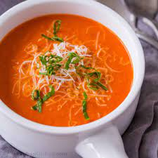

Tomato Soup

Tomato soup is a soup with tomatoes as the primary ingredient. It can be served hot or cold.
Ingredients
- 1 tablespoon unsalted butter
- 1 tablespoon olive oil
- 1 onion, thinly sliced
- 2 large garlic cloves, peeled and crushed
- 2 (28 ounce) cans whole peeled tomatoes
- 1 cup water
- 1 tablespoon sugar
- 1/4 teaspoon celery seed
- 1/4 teaspoon dried oregano
- 1 pinch red pepper flakes
- salt and ground black pepper to taste
Steps
- Heat butter and olive oil in a large saucepan over medium-low heat. Cook onion and garlic until onion is soft and translucent, about 5 minutes. Add tomatoes, water, sugar, celery seed, oregano, red pepper flakes, salt, and pepper. Bring to a boil. Reduce heat, cover, and simmer for 15 minutes.
- Remove from heat and puree with an immersion blender. Reheat soup until warm and season with salt and pepper.
Nutritional facts
Per serving- 100kcal, 5g of fat, 15g of carbs, 2g of proteins